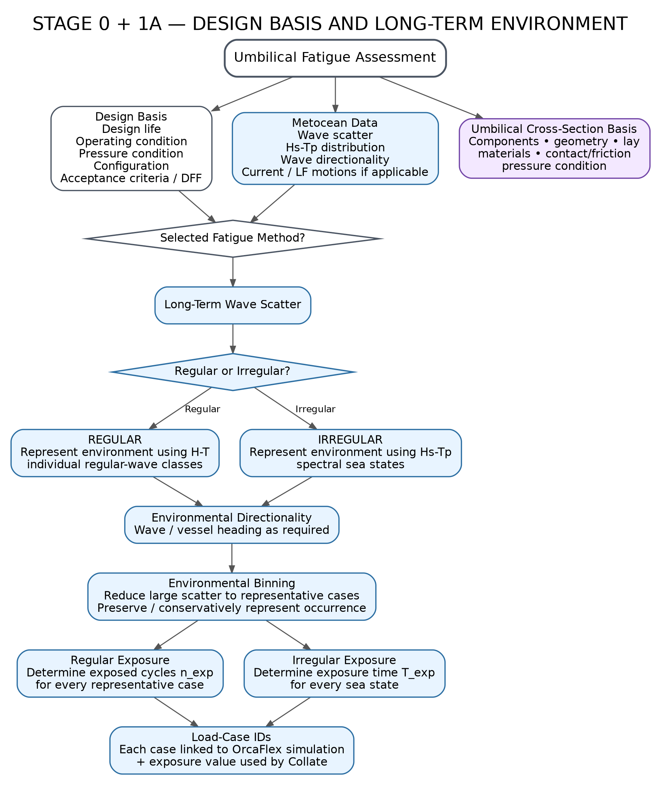

This branch converts project intent into a fatigue-ready basis: life, DFF, operating conditions, metocean representation, regular vs irregular method, directional treatment, binning and final load-case IDs.
Click any node to open its engineering details, inputs, outputs and key checks.
Top-level goal for this branch
Start hereDesign life, operating condition, pressure condition, configuration, acceptance criteria / DFF
Project / code drivenWave scatter, Hs-Tp distribution, wave directionality, current / LF motions if applicable
Long-term environment inputComponents, geometry, lay, materials, contact/friction, pressure condition
Local basisChoose the method and corresponding environmental representation.
Adopt the long-term environmental representation to be used for fatigue.
Select the fatigue route.
Represent environment using H-T individual regular-wave classes.
Deterministic wave classesRepresent environment using Hs-Tp spectral sea states.
Stochastic sea statesWave / vessel heading as required.
Preserve directional realismDetermine exposed cycles n_exp for every representative case.
Cycle-based exposureDetermine exposure time T_exp for every sea state.
Time-based exposureReduce large scatter to representative cases while preserving occurrence.
Manageable yet conservativeEach case linked to OrcaFlex simulation + exposure value used by Collate.
Downstream-ready identifiersThese are the key things to freeze before moving downstream.
This page is the interactive interpretation of the Design Basis and Long-Term Environment flowchart.
